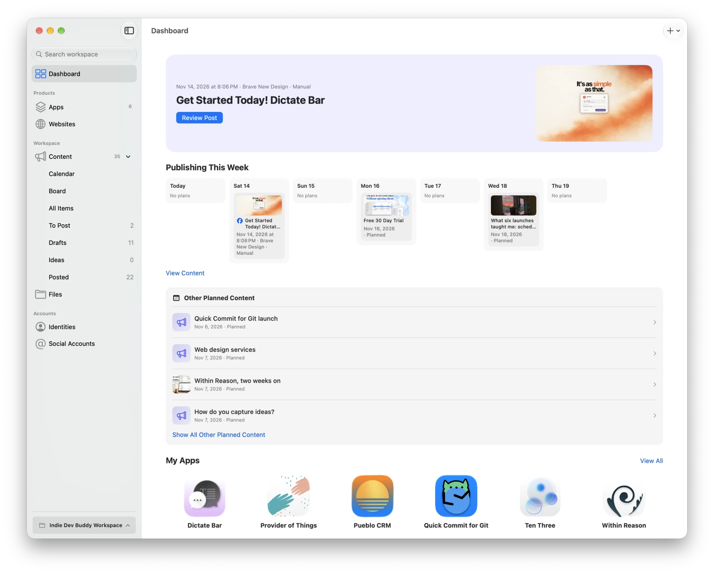
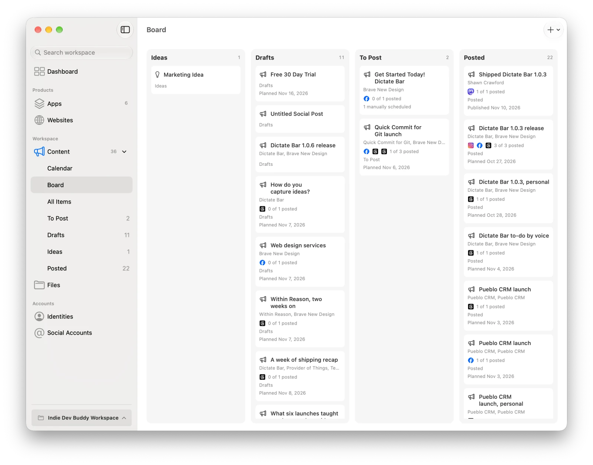
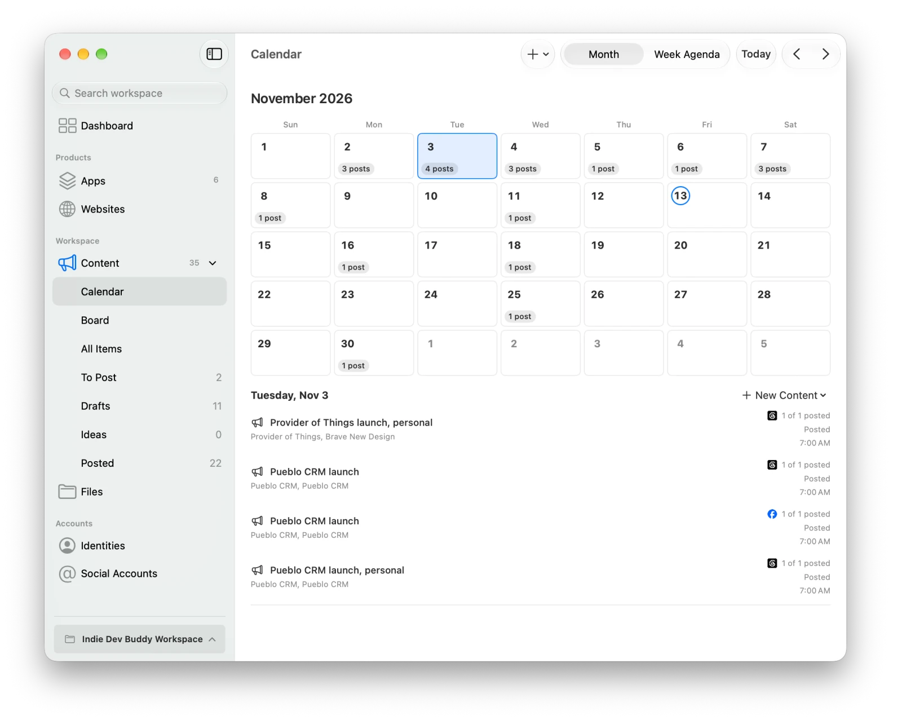
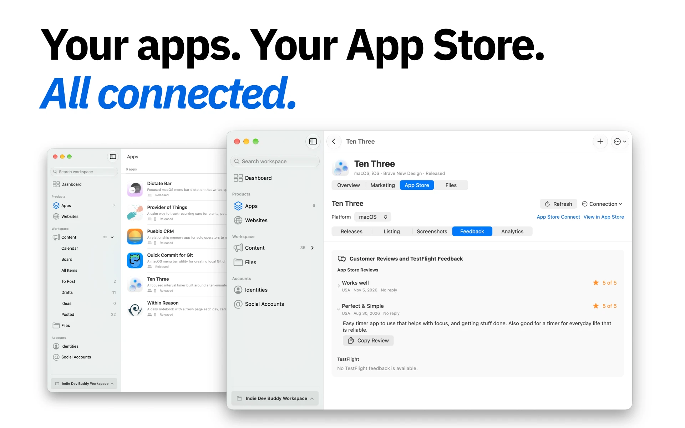
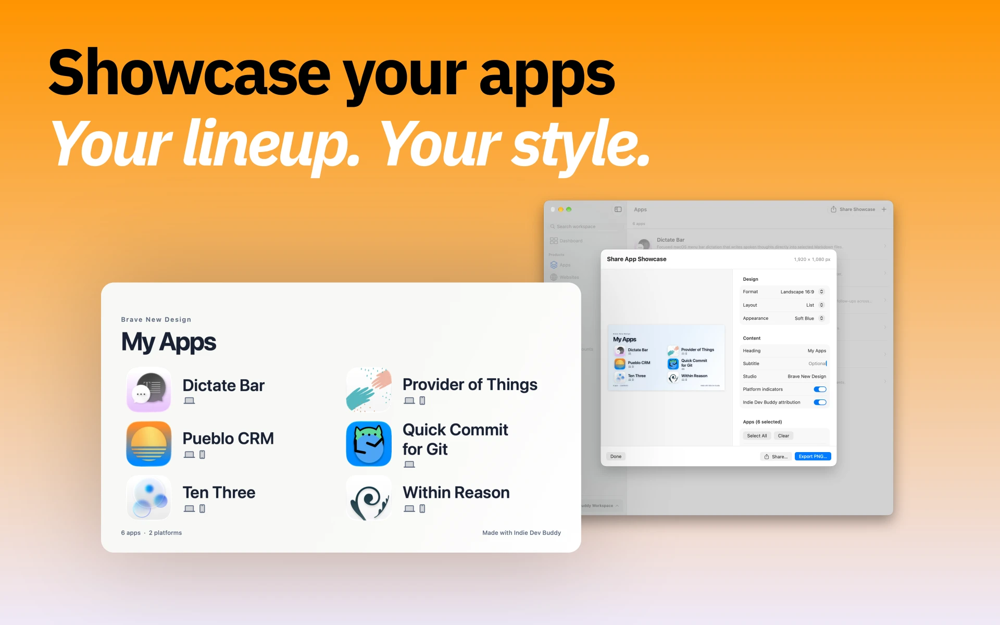
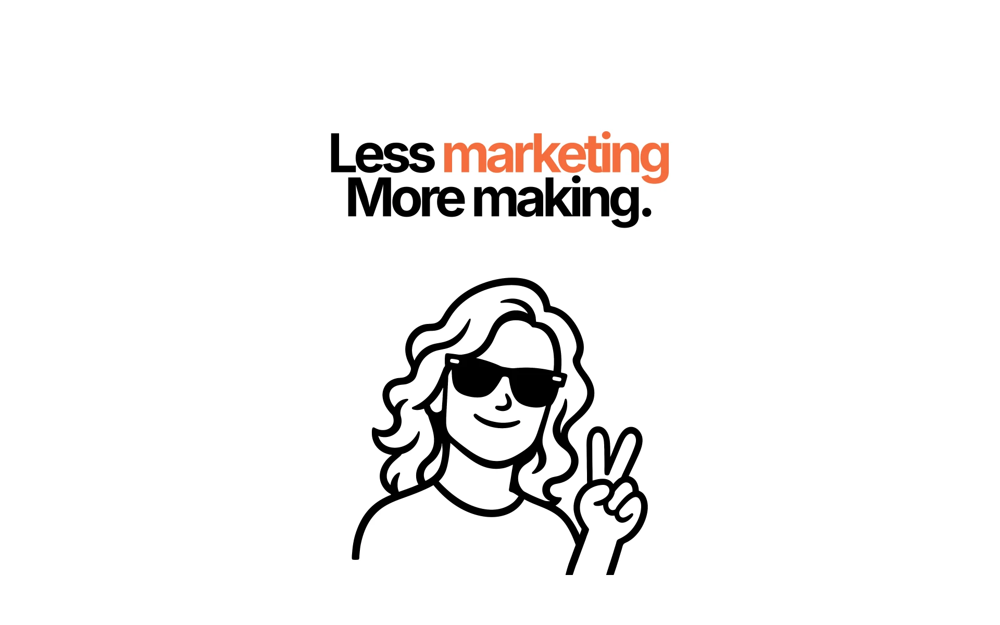

Organize your projects
Keep app descriptions, icons, project folders, repositories, websites, and App Store and TestFlight links together in a workspace you choose.
A little more organization for everything that comes after making an app. Bring your projects, marketing, social accounts, and App Store Connect information together.
Download for MacApple silicon · macOS 27.2 or later · Open source

From the first idea to your next release, keep the details close at hand.
Keep app descriptions, icons, project folders, repositories, websites, and App Store and TestFlight links together in a workspace you choose.
Write articles, social posts, and ideas. Use a calendar or board to plan, customize posts for each account, and preview them before sharing.
See release and build status, listing details, reviews, TestFlight feedback, available analytics, and screenshots. Prepare release notes and marketing drafts.
Organize reusable images, create and check screenshot sets, and export a shareable image of your app lineup.




The app is signed and notarized and checks for updates through Sparkle. Read the getting started guide.
Connect a supported account to publish or schedule from the app, or plan manually and post elsewhere.
Connected publishing: Bluesky, Facebook Pages, Threads, Instagram, X, LinkedIn, and Mastodon.
Manual planning: GitHub accounts and custom platforms.
Where providers permit it, review account activity and interact with posts or comments. Features depend on the provider, account setup, and permissions. Explore social connections.
Your workspace lives in a folder you choose, with ordinary files you can back up. There is no hosted account or cloud scheduler.
The included indiedevbuddy command-line tool lets people, scripts, and AI agents manage workspace records and drafts. It returns structured JSON and supports revision checks and validation. Each workspace includes agent guidance and a marketing content skill; no MCP server is required.
The CLI manages workspace data. Connecting accounts, scheduling, and publishing happen in the app.
Explore the command-line guide →Social credentials are stored in macOS Keychain. App Store Connect requires an installed, authenticated asc command-line tool and provides read-only access. It cannot upload metadata or screenshots, submit versions, or reply to reviews. Analytics depend on available reports and profile permissions.
Indie Dev Buddy is available under the MIT License. Build from source with Xcode 27.2 or later, or help improve the app through issues, code, and documentation.
